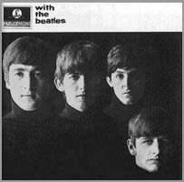
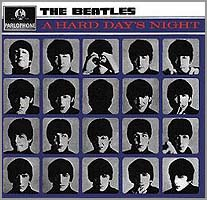
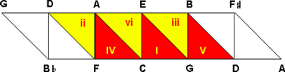
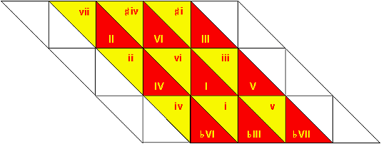
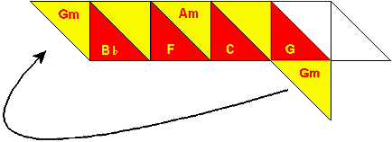

A Beatles' Odyssey |
|||
| Alan W. Pollack's musicological journey through the Beatles songs | |||
| by Ger Tillekens | |||
|
|
|||
 In many ways the songs of the Beatles are exemplary for the musical innovations the British beat explosion wrought onto the domain of popular music in the sixties. With their music the British groups forged a highly original combination out of the erstwhile separate elements of other musical styles, which quickly evolved to become a full-blown style of its own: the music we nowadays know as pop or rock music. The Beatles stood at the front-lines of this artistic movement and their songs offer worthwhile material for those who want to know more about the musical characteristics of rock music. And, there's help for those who want to study these songs. Since 1989 everyone can look for assistance on the internet in the Notes on ... Series, written by the American musicologist Alan W. Pollack on each and every Beatles song. |
|||
|
|
|||
| 1 | Chains of pan-diatonic clusters. Think yourself back to the city of London at the end of the year 1963 and meanwhile keep in mind that the virus of Beatlemania at that moment still was restricted to the British Isles and beat music was seen as music for adolescent boys and girls. Then and there only a few adults took the sound of the four Beatles seriously. Yet there were some who did and among them there was at least one real musicologist. If you had been there on the right day and you had bought the distinguished British paper The Times, out of the first hand you could have read an extensive musicological article devoted to the Beatles. This early assessment was full of praise for their musical accomplishments, but also phrased in a kind of learned musicological language that contrasted sharply with the self-concept of the rising youth culture. Read the next quote to know what the author heard in songs, most young people in those days just danced or sat down to listen to. | ||
| "Their noisy items are the ones that arouse teenagers' excitement. Glutinous crooning is generally out of fashion these days, and even a song about "Misery" sounds fundamentally quite cheerful; the slow, sad song about "That Boy", which figures prominently in Beatle programmes, is expressively unusual for its lugubrious music, but harmonically it is one of their most intriguing, with its chains of pan-diatonic clusters, and the sentiment is acceptable because voiced cleanly and crisply. But harmonic interest is typical of their quicker songs too, and one gets the impression that they think simultaneously of harmony and melody, so firmly are the major tonic sevenths and ninths built into their tunes, and the flat submediant key switches, so natural is the Aeolian cadence at the end of "Not a Second Time" (the chord progression which ends Mahler's "Song of the Earth")." [1] | |||
| 2 | From our Music Critic. "Chains of pan-diatonic clusters", "major tonic sevenths and ninths" and "Aeolian cadences", all these qualifications seem to be far removed from the daily experiences and expressive motives of the buyers of the early Beatles' records. Though the article was regarded as a kind of official recognition of popular music, many people — including the Beatles themselves — made fun of it. John Lennon himself mockingly said, he thought Aeolian cadences to be some kind of "exotic birds". The piece was neutrally signed "From our Music Critic", but is commonly ascribed to William Mann, the regular music critic of the London paper at that time. But whoever wrote the commentary, he was not the last serious musicologist trying to get hold of the musical peculiarities of the Beatles songs. As rock music was to become a major cultural force, others were to follow. | ||
| 3 | Eight books and more ... In 1979 the British musicologist Wilfrid Mellers published his analyses in a full-length book Twilight of the Gods. It was followed by a whole series of other books, now coming from people who themselves grew up with rock music. In 1983 both Steven Porter's Rhythm and Harmony in the Music of the Beatles and Terence O'Grady's The Beatles: A Musical Evolution tried to get at the musicological core of the Beatles' musical innovations. In the same year in Germany Volkert Kramarz published his insightful Harmonie-analyse der Rockmusik, while Alexander Villinger tried to relate Die Beatles-songs to the musical tradition of the Classical and Romantic Styles. Some five years later Tim Riley wrote his telling insights down in Tell Me Why (1988) and shortly thereafter Heinz Bamberg made an in-depth comparison of several cover versions of the song "Money" by the Beatles and other British beat-groups in his Beatmusik (1989). More recently Allan Moore published his study of Sgt. Pepper's Lonely Hearts Club Band (1997) in the prestigious Cambridge Music Handbook Series, parachuted right between studies of Bartók's Concerto for Orchesta and Beethoven's Ninth Symphony. This is just to name a few of the most important ones. But wait: there's yet another publication that unmistakably belongs in this series, though it is not published on paper, but on the internet. |
||
| 4 | If this guy ... In 1998 I myself earned my Ph.D. with again another book, about the early Beatles songs, arguing their music signaled the beginnings of a completely new style of popular music, which was to become the style of nowadays pop and rock music. No, wait, that book is not on the internet and it certainly is not the book I want to talk about here. However, it is relevant in an indirect way. As I started to think about the book in the last months of 1994, I knew less than nothing about music theory — and even less about "pan-diatonic clusters" — and of course I leaned heavily on the books I mentioned above. As my book was the first academic book on this subject in the Netherlands, it got a lot of attention from the press as soon as it was published. Many reviewers were rather positive about the musicological analyses I made of the first fifty Beatles songs. Some, however, expressed their doubts. Not even having read the book, someone for instance wrote the next critical comment in one of the major Dutch papers: "If this guy has not used Alan W. Pollack Notes on ... Series on the internet, he immediately must return his Ph.D. to his university." Luckily I had not overseen Pollack's work in my literature search, so I still have got my grade. In one respect, however, the remark was right at target. One cannot write about the music of the Beatles, without having read, next to some of the above books, also Pollack's analyses. | ||
| 5 | Two big hot buttons. Though Pollack is not the first to write about the Beatles songs, his analyses are — in respect to the musicological aspects of the Beatles' repertoire — by far the most detailed ones. Each and every song gets the attention it deserves and Pollack never tires to explain the little details. It is clear, that he has put a great amount of work in it, and even so it did cost him a lot of time. His Notes on ... Series started in May 1989 — it now really is a ten year Odyssey — with a short note on "We Can Work It Out" and then it went on and on. It all began, Pollack writes himself, "... as a way of indulging two very big hot buttons: re-emerging Beatlemania on the threshold of middle age, and an ingrained hunger for playing the part of the ol' professor." The next button, Pollack confides, was pushed by D.L. MacLauchlan, who under the internet pseudonym of "saki" runs the rec.music.beatles.info newsgroup, and who double-dared him to write his views down for the newsgroup. Her invitation did work. To date there have been around 160 installments of the Notes on ..., varying in frequency of appearance, as Pollack says, "in a manner directly inverse to the pace of his combined family and professional life." | ||
| 6 |  From ASCII to HTML. Pollack certainly is a fan of the Beatles, but he also has quite an amount of expertise in music theory. He knows what he is doing. He has a Ph.D. in music theory and composition (University of Pennsylvania, 1977) and he has taught these same subjects on college level. For reasons he himself calls too personal and boringly complicated to go into, he's been working in the field of software engineering since 1978. Using the tools of his daily profession, Pollack wrote the originals as plain ASCII text files, using the Unix editor "vi". At first they were send as e-mail to the rec.music.beatles newsgroup on the internet. Next they were conversed to HTML by Ed Chen, Mike Markowski, Bruce Dumes, and Maurizio Codogno and published on The "Official" rec.music.beatles Home Page and now you can also read them on the pages of soundscapes. Many people already have read his notes, but — just like way back in 1963 — still not everyone is as happy with a musicologist dissecting the Beatles songs with the tools of his trade. |
||
| 7 | Beatles' fans versus Classical Music Academia. "I've done the series as a labor of love for its own sake," Pollack tells us, "Yet, I've often felt like the results "fall between two stools" (a British expression for saying "it's neither here nor there")." He describes this uneasy position as follows: "The average Beatlemaniac doesn't have the musicological discipline with which to understand the notes, and my erstwhile academic buddies look down at me for not choosing a more worthy subject in which to invest my time. The chronic sticking points I run into with the pop culture crowd is the old saw about: "but these guys couldn't even read music, so how can you possibly attribute intellectual compositional motives to them?" At least in so-called Classical Music Academia, people understand that my style of analysis is a kind of after-the-fact linguistic analysis based on actual, vernacular usage. Trained musicologists understand that the theory books are based on the music of the great composers; not the other way around. My problem with the musicological establishment is their condescending attitude toward pop music per se." | ||
| 8 | Breaking all the rules. The arguments of those Beatles' fans who disagree with a musicological analysis of their favorite songs, are summing up to an impressive list. First and for all they say, the serious labor of study takes the fun out of the pleasure of listening to the music; next they argue it neglects the feelings of the listener and — above all — they hold the musicological approach to be far removed from the way the music was produced by the artists. The first two arguments seem to be irrelevant as they only concern the level of abstractness or directness of listening. Abstract or direct listening are just two different ways to listen to a song and both ways of listening can be pleasant as well as informative and one can easily shift between them. On the third point they, however, are absolutely right. Of course, the Beatles sought and found their way to their songs playing and improvising on their instruments. It's right, rock music was and is not designed from a theoretical perspective nor written out in advance on music sheets. More important even, the Beatles violated all existing musicological rules, trying to express their emotions with all musical means. One could even say that breaking the rules was the one big thing where the Beatles songs were really all about. The Beatles used many chords, not resolving properly according to the teachings of "functional harmony" and there are, as Pollack calls them, a lot of "synthax errors" in the grammatical meaning of the harmonic order. However, just this aspect of the Beatles songs shows the relevance of a musicological approach. What where all those rules? How did the Beatles break them? And, how did they, at the same time, succeed in keeping their songs understandable for their listeners? When you're trying to find some answers to these kinds of questions, musicology will lend a helping hand. |
||
| 9 | A punchlist of Beatles' trademarks. There's one last point often made against musicologists meddling with rock music: reducing rock productions to sheet music and musical notation misses the most important aspects, as rock songs have to be taken as recorded music in its unique combination of all the specific details of the performance by the artist. As far as this point of criticism goes, it certainly does not hold for Pollack. In his notes he takes the songs as they are recorded. He does not recur to sheet music, as he is analyzing them by ear. Thus far he has quoted only three books for reference: Lewisohn's (1988) extensive overview of the recording sessions, the text inventory of Campbell and Murphy (1980) and — in a critical sense — the works of Terence O'Grady (1983). In fact, each of his analyses itself is a most powerful counter-argument by showing, that the musicological approach to rock music offers an insightful view into the musical innovations of the style of music that was initiated by the Beatles and their fellow musicians of the British beat explosion. In this respect Pollack's analyses are very useful, as they have much to show of the intricacies of the Beatles songs. Just like the main body of rock music, that was to develop in the wake of British beat explosion, the songs of the Beatles are very complex. In his essay on the cover songs on the album "Please Please Me" Pollack summarizes: "... the punch list of early Beatles musical trademarks: the tricky chord progressions, the pungent vocal harmonies, the clever word play etc." Let's take a short walk along the most important ones, just as they arise out of Pollack's studies. | ||
| 10 | Extended harmonic material. The Times' critic typified the Beatles' compositions as "harmonically intriguing" and, indeed, the first and most striking characteristic of the Beatles songs is the use of extended harmonic material. Simply said, the Beatles applied all kinds of chords seemingly at random in their songs, thereby neglecting standard cadences or varying on them at will. Many people still think pop songs are just simple three-chord songs, but that's really seldom the case. Even when a rock songs is built around only three chords, they're seldom the three basic chords. Let's start with those famous three basic chords: the tonic (I), the dominant (V), and the subdominant (IV). In musicological vernacular they are symbolized with roman numerals I, V and IV, indicating the tone steps. When we take for instance the C chord as the tonic I, then the dominant V is the G chord — counted five steps upward: C -» D -» E -» F -» G — and the F is the subdominant IV. Each of those chords consists of three tones. Figure 1 shows an example of the basic chords organized around the root note of C (I). | ||
 |
|||
| Figure 1: The standard chords (red): tonic (I), subdominant (IV) and dominant (V); and their relative minors (yellow): submediant (vi), supertonic (ii) and mediant (iii) | |||
| 11 | Relative and parallel minors. In figure 1 we have painted the basic chords red. Here we see, that the C chord consists of the tones: C, E, and G. We also notice that the subdominant F and the dominant G are neatly ordered on both sides of the tonic. In short there is some system to these three chords. There are also some chords colored yellow. These are the so-called relative minors. As the tonic C is built out of the notes C, E, and G, the building blocks of its relative minor vi (a-minor) are A, C, and E. You see both chords have two tones in common and that's why they are harmonically related. The same goes for C-Major and c-minor (i), which combines the tones of C, G, and E-flat. Because of the harmonic congeniality of these chords, one would expect, that they could easily be used together in one and the same composition. That's, however, not always the case. The a-minor chord, especially when combined with d-minor and e-minor, tends to pull the key to A. And, the c-minor-chord — though it has the same root as C-Major — threatens to relocate the scale to minor by its relation to notes such as E-flat. By the way, compared to the language of music itself the musicological vernacular is not very universal. In the English language the c-minor chord is called the "parallel" minor of C-major. Confusingly in German and Dutch relative minors are called parallel minors (respectively "moll Parallelle" and "parallelle mineuren"). | ||
| 12 | Bimodal and trimodal keys. Breaking the rule of not mingling these relative and parallel chords was one of the things the Beatles really seemed to like. In their songs they treated the harmonic system freely as if the parallel and relative minors (and sometimes even their parallel and relative Majors) are "co-tonics". Many of their songs are erected on bimodal of even "trimodal" keys, with clusters of relative and parallel minors and Majors, e.g. the cluster of e minor and its relative Major E and its parallel Major G, or the combination of C, a minor and A Major. For that matter, this mix of Major and minor keys is just what the Aeolian cadence is all about. These combinations not only mean a break of the rules, but — more important — a conflict with the existing conventions and the expectations of listeners at the time of their first recordings. | ||
 |
|||
| Figure 2: The harmonic structure of the chords in the Beatles songs | |||
| 13 | A diagonal tone matrix. In fact the Beatles systematically approached the harmonic grammar as if they always had several co-tonics ready at hand. From the tonic I, they as easily switch to the relative minor vi as its parallel major VI. A favorite is also the parallel minor i and its relative major, flat-III. This harmonic chord material is neatly ordered along the lines of the minor thirds (look at figure 2 and see why, in my book, I call it a diagonal tone matrix). In some of his early articles, it seems, Pollack's classical trained ears sometimes lead him astray on this point. In his analysis of "It Won't Be Long" for instance he calls the relative minor of the tonic a pseudo dominant, as indeed in the Classical Style it often is. Later on, however, he typifies the interchange between relative and parallel keys as one of the trademarks of the Beatles songs. In his review of "Free As Bird" this characteristic for him is an important reason to treat this song as a real Beatles song; and one has to agree with his arguments. Paging through Pollack's notes one finds many examples of these switches to these keys, and also of more accidental, "borrowed" chords from these related keys, like the flat-VI — the "Peggy Sue" chord — in "I Saw Her Standing There". And, as Pollack shows over and over again, this play with different related keys is accentuated by the Beatles' preference of starting the intro in another key than the home key. | ||
| 14 | Harmony and melody. So why, you will say, all this fuzz about co-tonics? Well, there's one good reason: because the rules of functional harmonics forbids all too free access to them. Importing chords from other keys endangers the original key and threatens to make music sound false. It's here where the melodies of the Beatles play an important role as a powerful antidote to the tonal ambiguity. Let's quote again The Times of 1963, where the music critic wrote: "... one gets the impression that they think simultaneously of harmony and melody (...)." That observation is unmistakably true and, sure enough, it is the second characteristic of the Beatles songs as it emerges out of Pollack analyses. Regarding "Day Tripper", he writes for instance: "The melody of the voice parts is very difficult to sing, particularly without the underlying chords to keep you oriented; have you tried singing this song in the shower lately?" In this observation Pollack is as right as the music critic of The Times. The Beatles songs have a special way of making melody and harmony go together and often it is the melody which tempts the listener to take the strange and wild chord progressions for granted. In his analyses Pollack tries to get at the overall musical flavor of each song, taking in regard all aspects of the music as recorded: harmony, melody, rhythm, overlayered dubs etcetera. But, rightly so, his studies give special attention to the interaction between harmony and melody as conveyed by inner voices, bass and lead guitar. In this context Pollack also introduces his readers to the concept of "false relations". | ||
| 15 | New and unexpected modulations. The third main characteristic of the Beatles songs regards some intricate, highly original, and thus unexpected modulations or tone shifts. To analyze these Pollack uses the tools developed by the Austrian musicologist Heinrich Schenker. Schenker's analysis is based on so-called "Ur-Sätze". Simply said these "primal sentences" are recurrent cadences of just those chords which unmistakably belong to a certain key, like the tonic, the dominant and the subdominant (e.g. I -» V -» I), or those chords whose role can be reduced to simple cadences like the chain of fifths. For instance, in a chain of fifths like II -» V -» I, the second step II — though not one of the basic chords — is legitimate, because it can be interpreted as a secondary dominant, a "V-of-V". Otherwise, to account for other chords in a composition, one has to recur to modulations or tone shifts. To describe these modulations and shifts Schenker introduced a method of diagrams, which later on appeared very useful for the analysis of jazz and rock music. The method also is a favorite of Pollack, as it reveals much of the Beatles' use of "co-tonics". But using related co-tonics, the Beatles also discovered some wilder modulations. As Pollack shows, these too can be made clear by means of Schenker diagrams. For an example, let's take a quick look at "From Me To You": | ||
m.13
C: |I |vi |I |V |
m.17
C: |IV7 |vi |I V |I |
m.21
F: |ii |V7 |I |- |
C: |v |I7 |IV |- |
m.25
F: |VI7 |- |II |II+ |
C: |II7 |- |V |V+ |
|
|||
| 16 | A big departure. The example above starts in measure 13 on the second verse (notice the typical use of the relative minor (vi) in measure 14 and 18). Next, the bridge or middle-eight starts in measure 21 with the words: "(I've got) arms that long to hold you". Here we find a surprising modulation a fifth downward from C Major to F Major, by way of the g-minor (v) which is "borrowed" from the parallel "co-tonic" of c minor. In his interview with Mark Lewisohn (1988: 10) Paul McCartney himself enthousiastically voiced it this way: "... that middle eight was a very big departure for us. Say you're in C then go to a-minor, fairly ordinary, C, change it to G. And then F, pretty ordinary, but then it goes [sings] "I got arms" and that's a g-minor. Going to g-minor and a C takes you to a whole new world. It was exciting." | ||
 |
|||
| Figure 3: Pivot modulation in "From Me To You" with an enharmonic change on g-minor (v) | |||
| 17 | Pivot chords. The g-minor itself is typical for the Beatles' usage of "co-tonics". Here, however, it also gives way to a modulation, which means the listener has to reorient to the new key after-the-event. The chord on which this reorientation happens to take place, is called a "pivot chord". Here Pollack identifies the C Major seventh in measure 22 as the pivot chord in question. First the C-Major chord undoubtedly is heard as the tonic. "But", as Pollack says, "once the bridge begins, the ear retrospectively reinterprets it as though it were the V of the key of F." In short the modulation turns the F chord into the tonic, while transforming the original tonic C into its dominant. Indeed, it is a whole new world, as we arrive from the world of C Major into the world of F Major. Here, as an extra to Pollack's analysis, we can add the observation that this pivot modulation also implies an enharmonic change (figure 3; see also the study of Volkert Kramarz, page 51-53). The g-minor of the middle eight really belongs to another musical continent, because in its role as the relative minor of B-flat the g-minor chord sounds slightly different from the g-minor that is the parallel minor of G. Though on instruments of even temperament both g-minors are played with exactly the same finger settings, one's ears have to adjust to the shift by bringing the chord in relation to the new key. | ||
| 18 | A complex of emotions. Next to the extended harmonic material, the interplay of melody and harmony and all the new modulations, there's a fourth characteristic element to be found in the Beatles songs. That's the almost direct relationship between music and lyrics. In his notes Pollack often calls this aspect to the attention of his readers. In his analysis of "Things We Said Today", for instance, he signals: "... the way in which the details of the music assist the words in the evocation of an otherwise difficult to verbalize complex of emotions." Again he is right, as the connectedness between words and chords seems to be a typical trait of all Beatles songs. However, that's as far as his analysis of this crucial aspect of the Beatles songs goes. Moreover, though Pollack recognizes the originality of the Beatles songs, thus far he has written almost nothing about the question if the music of the Beatles represents a new style of popular music in its own right. But, it's yet too early for this kind of critical comments, as Pollack has not yet finished his notes. | ||
| 19 | Getting back. Reading Pollack's Notes on ... one learns almost everything there is to know of the Beatles songs and even a lot about musicology, included the "major tonic sevenths and ninths" and "Aeolian cadences" mentioned in The Times' early review (except of course for the "chains of pan-diatonic clusters", which really were a literary invention flowing poetically out of the pen of "our Music Critic"). [2] Eventually Pollack intends to publish the completed set of his notes in the form of a book. "This will, of course", he warns us, "take a while, and I'm hardly thinking of quitting my day job in the meanwhile. I'm more than happy to share the work with the net as it emerges, but I will humbly ask you all for your courtesy in honoring my copyright of the material." He has now been away in Beatles' territory for ten years, a real Beatles' Odyssey. Unlike Ulysses, however, Pollack has not yet returned from his travels. But, rest assured, he will get back, as he wrote us recently: "I've put the series on hold for the last month or so because home life has been unusually hectic, but I'm excited about jumping into the "Get Back" period with both feet very soon. At the rate I'm going, I hope to complete this first pass on the songs within two years." Here at Soundscapes we will keep you informed about his progress. | ||
|
|
|||
| Notes | |||
| 1. One can read the full article in Michael Braun's fly-on-the-wall account of Beatlemania: Love Me Do. The Beatles' Progress. Harmondsworth: Penguin, 1964, 1995 reprint, pages 66-68. |
|||
| 2. In his notes on "Getting Better" Pollack (1995) himself describes the phrasing "pan-diatonic" as "a fancy way of saying that no notes appear anywhere in the song that are not native to the home key, and that they are all considered consonant amongst each other." This goes largely for "This Boy" (key: D Major). Only the added seventh in the sung harmonies (F#-A-B) over the b minor chord poses some problems to the definition of this song as "pan-diatonic", as it introduces a subtile dissonance. |
|||
|
|
|||
| References | |||
|
|||
|
|
|||
| 1999 © Soundscapes | |||